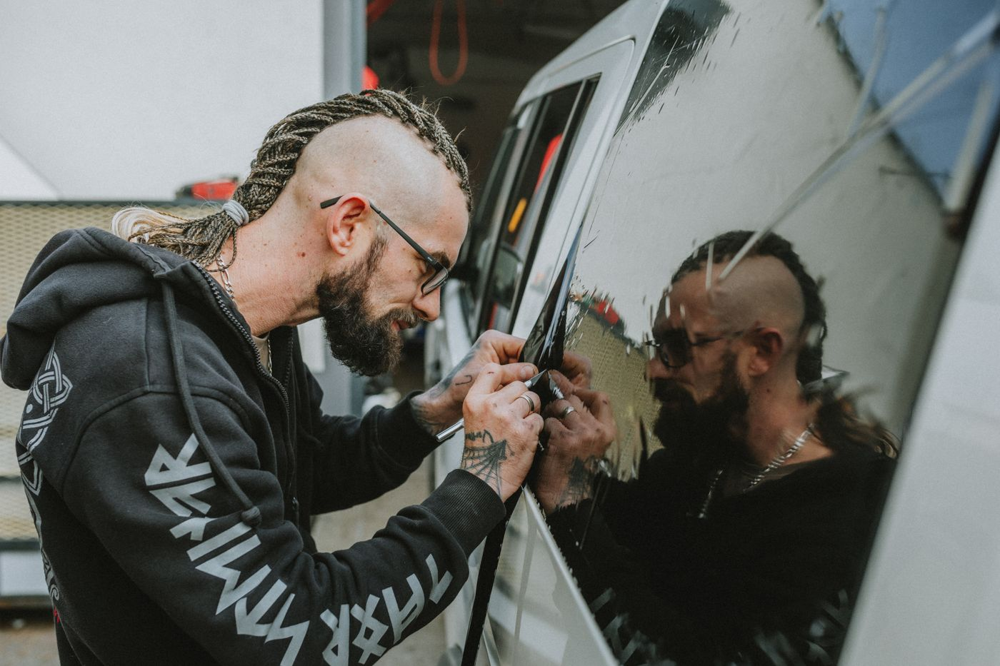

01 / ЗАЩИТА КУЗОВАSTEK
Защитная
полиуретановая плёнка
STEK DYNOshield — прозрачная глянцевая плёнка для защиты отдельных зон или всего кузова от дорожного абразива и мелких повреждений.
STEK DYNOshield ↗
FORMA DETAIL STUDIO · МОСКВА
Коррекция лака, защитная полиуретановая плёнка на кузов и тонировка. Точная работа с каждой поверхностью — от осмотра до чистого финиша.
РАБОТА С КУЗОВОМ
Сначала оцениваем покрытие и задачу. Затем предлагаем конкретный состав работ — без универсального пакета на каждый автомобиль.
ПЛЁНКА И ПРОФЕССИОНАЛЬНАЯ АВТОХИМИЯ
Для кузова и салона — отдельные материалы. Подбираем их под поверхность и задачу, а не используем один состав для всего автомобиля.
STEK DYNOshield — прозрачная глянцевая плёнка для защиты отдельных зон или всего кузова от дорожного абразива и мелких повреждений.
STEK DYNOshield ↗Средства для мойки, очистки лака перед полировкой, коррекции поверхности и ухода за салоном.
Каталог Koch-Chemie ↗Составы для мойки кузова, очистки колёс, стёкол и ухода за интерьером.
Shine Systems ↗ДЕТАЛИ РАБОТ
Сравнение участка до и после коррекции: сначала тестовый проход, затем подбор режима для всей панели.
Пример коррекции у Le Perfectionniste, Metz. Фото Nietzsche92 / Wikimedia Commons, CC BY-SA 4.0.

02 / ТОНИРОВКА СТЁКОЛМастер укладывает плёнку на боковое стекло и разглаживает её по поверхности. Фото Helena Jankovičová Kováčová / Pexels.
ОТ ЗАЯВКИ ДО ВЫДАЧИ
Фиксируем задачу и состояние автомобиля, согласуем объём работ, после — показываем готовый результат.
Осматриваем кузов и отмечаем повреждения.
Обсуждаем технологию, сроки и стоимость до старта.
Делаем фото ключевых этапов для отчёта владельцу.
Показываем обработанные зоны и рекомендации по уходу.
ПЕРВЫЙ ШАГ
Опишите автомобиль и задачу. Уточним состояние покрытия и возможный объём работ.